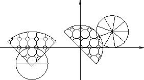

Home Page
F.A.Qs
Statistical Charts
Past Contests
Scheduled Contests
Award Contest
| Online Judge | Problem Set | Authors | Online Contests | User | ||||||
|---|---|---|---|---|---|---|---|---|---|---|
| Web Board Home Page F.A.Qs Statistical Charts | Current Contest Past Contests Scheduled Contests Award Contest | |||||||||
|
Language: Balanced Food
Description Computer scientists live on pizza. Now the doctors say this is no good. We ought to eat more balanced. So you put your really large pizza onto your table and eat slice-by-slice carefully watching that the rest of your meal stays where it is - on the table.
Since computer scientists love pizza, their favourite table is shaped like a slice of pizza. However, different people may have different-sized tables. Everyone has his own preference for the number of slices a pizza has to be cut to. However, all agree that the slices must have identical size. Write a program to help the poor pizza lovers! Input The input file contains several test cases. Each test case starts with the number of slices n the pizza is cut to. Input is terminated by n=0. Otherwise, 1<=n<=10. Then follow 9 floating-point numbers px, py, r, tx, ty, ux, uy, vx, vy specifying the coordinates of the center p of the pizza, its radius, and the coordinates of three points t, u, v. They define the three corners of the slice-shaped table in counter-clockwise order, with t being the center.
The pizza is a homogeneous two-dimensional circular object. There is always a cut from its center parallel to the x-axis towards increasing x-values. The remaining pizza stays connected during the whole process, no matter what slices are removed. The distances from t to u, v are equal except for very small rounding errors. Tables are never larger than a half-circle. Output For each test case output on a line some possible ordering of slices, so that during the whole process of eating the pizza it does not fall down the table. Slices are numbered counter-clockwise starting with 1 directly above the positive x-axis.
If several such ordering exist, choose the lexicographically first one. If no ordering of slices exists, so that the pizza does not fall down, output a line containing the word "impossible" instead. Sample Input 2 (-3.0,-1.0) 1.0 (-3.0,-1.1) (-1.5,0.4) (-4.5,0.4) 9 (2.0,1.0) 1.0 (0.0,0.0) (1.0,-1.0) (-1.0,1.0) 0 Sample Output 2 1 impossible Hint A connected, rigid, flat object remains fixed on a convex, flat surface if and only if the object's center of gravity lies above the surface. The x-coordinate, for example, of the center of gravity of an object s can be calculated by (∫sxds) / (∫sds). Likewise, the y-coordinate can be expressed as (∫syds) / (∫sds). Note that the denominator of these expressions gives the area of s.
 Source |
[Submit] [Go Back] [Status] [Discuss]
All Rights Reserved 2003-2013 Ying Fuchen,Xu Pengcheng,Xie Di
Any problem, Please Contact Administrator